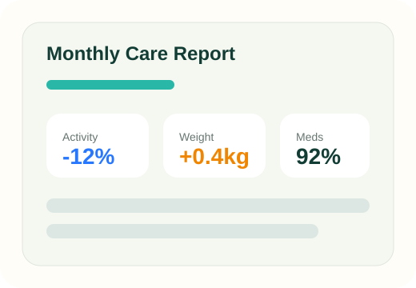
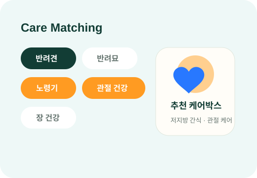
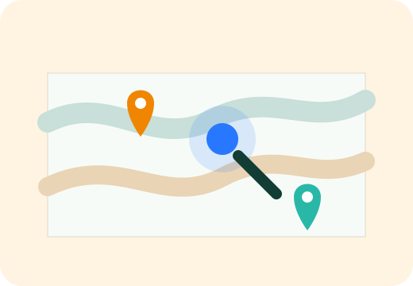
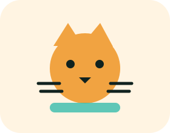

식욕, 체중, 배변, 복약, 특이 행동이 메모·사진·기억 속에 흩어집니다.
WHY PETIEUM
반려동물 관리는 기억보다 흐름이 중요합니다.
병원 방문 전 상태를 설명해야 할 때, 보호자는 생각보다 많은 정보를 놓칩니다. 펫이음은 흩어진 기록을 모아 매월 관리 루틴으로 이어줍니다.
관절, 장, 피부, 체중 등 관리 목적별로 어떤 제품이 맞는지 판단하기 어렵습니다.
갑작스러운 상황에서 병원 상담 전 정리할 내용이나 주변 서비스를 찾는 데 시간이 걸립니다.
SERVICE
펫이음이 제공하는 3가지 케어
기록, 제품, 위치 정보를 하나의 멤버십 흐름으로 연결합니다. 각 항목의 상세보기를 눌러 실제 이용 예시를 확인해보세요.
01
월간 AI 케어 리포트
진료, 접종, 복약, 체중, 식욕, 특이사항을 월 단위로 정리해 병원 상담 전 확인하기 쉽게 제공합니다.
리포트 예시
- 이번 달 요약: 식욕 저하 3회, 산책량 감소 2회, 복약 완료율 92%
- 변화 감지: 체중이 한 달 전 대비 0.4kg 증가해 식사량 기록을 권장
- 상담 준비: 병원 방문 시 확인할 질문 3개를 자동 정리
※ 질병 진단이 아닌 보호자 기록 정리 및 상담 준비용 리포트입니다.

02
관리 목적별 맞춤 케어 제품
반려동물 유형, 생애주기, 관리 목적을 조합해 월 1회 케어 제품을 제안합니다.
나의 케어 조합 만들기
예시 결과: 노령견 + 관절 건강
관절 부담을 고려한 저지방 간식, 체중 기록 리마인드, 활동량 변화 요약 리포트를 함께 제안합니다.

03
위치 기반 장례업체 찾기
이별의 순간에 필요한 주변 업체의 거리, 연락처, 운영정보를 빠르게 확인할 수 있도록 돕습니다.
급한 순간을 위한 정보 연결
이별의 순간에는 검색과 비교를 차분히 하기 어렵습니다. 펫이음은 현재 위치 기준 가까운 등록 업체 정보를 확인할 수 있는 구조를 준비합니다.
- 현재 위치 기준 거리
- 연락처 및 운영시간
- 상담 가능 여부와 기본 안내
- 향후 제휴 업체 정보 확대 예정

CARE BY PET TYPE
반려동물 유형에 맞춘 케어 루틴
반려견, 반려묘, 기타 반려동물은 생활환경과 관리 포인트가 다릅니다. 펫이음은 유형별로 필요한 기록과 케어를 다르게 설계합니다.
반려견
산책량, 관절, 체중, 피부·장 건강 관리가 중요합니다.
- 산책·활동량 기록
- 관절·체중 관리 제품
- 시니어기 병원 상담 메모

반려묘
음수량, 배변, 스트레스, 헤어볼·요로 관리가 핵심입니다.
- 식욕·음수량 체크
- 배변 패턴 기록
- 요로·헤어볼 케어 제품
기타 반려동물
종별 사육환경, 먹이, 행동 변화 기록이 중요합니다.
- 환경·먹이 루틴 기록
- 종 특성별 기초 관리
- 필요 시 전문기관 안내
PRICING
매월 이어지는 케어, 분명한 가치
기록만 남기는 앱이 아니라, 리포트와 케어 제품을 함께 제공하는 멤버십으로 설계했습니다.
Basic
베이직
19,900원/월
- 월간 AI 케어 리포트
- 접종·복약·체중 기록 관리
- 장례업체 찾기 기본 제공
- 베타 기간 기능 업데이트 제공
가장 추천 · 주력 플랜
Recommended
프리미엄
39,900원/월
- 베이직 전체 포함
- 관리 목적별 케어 제품 1종
- 제품 배송 포함
- 월별 관리 루틴 리마인드
Prepaid
3개월 선결제
109,000원/3개월
- 월 약 36,300원 수준
- 프리미엄 전체 포함
- 초기 케어 루틴 완화 목적
- 베타 고객 우선 피드백 반영
BETA OPEN
우리 아이에게 필요한 케어를 먼저 확인해보세요.
베타 기간에는 신청자에게 서비스 안내와 초기 체험 기회를 순차적으로 제공합니다.
이용 전 안내
펫이음은 반려동물의 건강 기록 정리와 케어 루틴 관리를 돕는 서비스입니다. 질병 진단, 치료, 처방 또는 복약 변경 판단은 제공하지 않으며, 이상 증상이 있는 경우 동물병원 상담을 권장합니다.